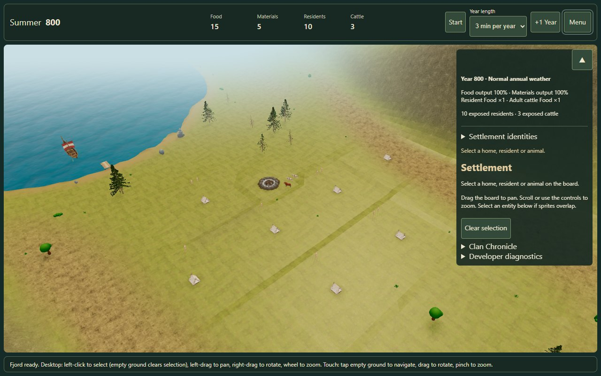
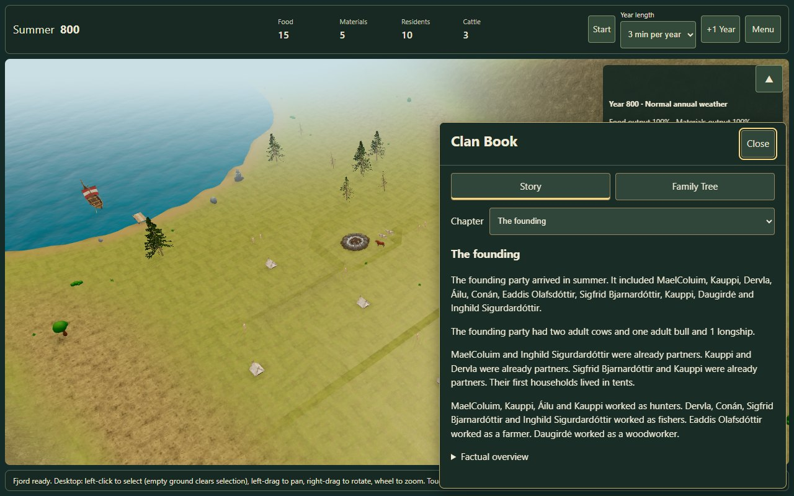

Summer 800 · A fresh landing
The settlement starts directly in Summer at tick 500: 15 Food, 5 Materials, ten founders and three cattle. No earlier months have been simulated.
Existing campaigns keep their saved time. Choose Menu → Campaign → New campaign from seed for a fresh Summer landing. Both restart choices also use Summer. The Summer introduction was accepted by the owner on 13 October 2026. New Fjord campaigns now use it by default.


The first Winter approaches sooner
The first annual reckoning is 500 played ticks away; later years last 1,000 ticks. At 1, 3 or 5 minutes per year this means 30, 90 or 150 seconds before the first boundary. Annual consumption and risk remain unchanged.
Nine of ten passive starts retain 1–9 Food. The Harsh-weather seed records 20 unmet Food; this also happens in its old Winter-start control. No balance adjustment was applied.
Scope of this review
The owner approved the green Summer arrival, Summer 800 label and opening wording. This verifies the current loading path; the cinematic island formation and camera flight from #153 still need implementation. Existing saves and 2D/headless defaults stay unchanged.